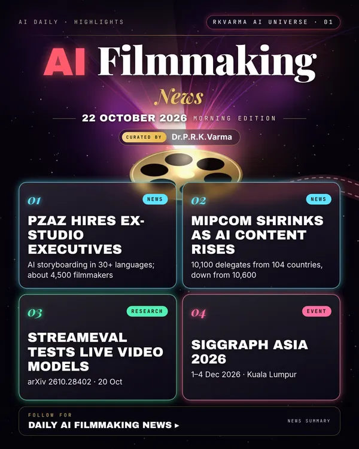

AI Filmmaking
Project page →2 minMore research papers in this category today → 1
Film AI is meeting the market: an AI storyboarding start-up has hired former studio executives to expand, while Mipcom's smaller turnout showed buyers chasing micro-dramas and AI content.
Research, industry & policy
- Pzaz adds former Disney and NBCUniversal executives to its advisory board, Deadline · 21 Oct 2026: Paul Robinson, Rose Stacey, Lindsey Oliver, Jonathan Levi and Weerada Sucharitkul will guide the AI storyboarding platform, which works in more than 30 languages and says about 4,500 filmmakers use it, as it grows in North America, EMEA and Asia-Pacific.New today
- Mipcom Cannes shrinks as micro-dramas and AI dominate, AnimationXpress · 21 Oct 2026: The TV market drew 10,100 delegates from 104 countries, down from 10,600 from 107, and 3,150 buyers against 3,300; Mipjunior fell to 600 participants and 165 buyers.New today
- Gen Z feels uneasy about AI stories; Gen Alpha is warmer, IndieWire · 21 Oct 2026: A UCLA and Center for Scholars and Storytellers study of 10- to 24-year-olds found 53.8% felt fascinated or excited by AI-made stories and 32.1% felt doomed or scared, with unease rising with age.New today
Journals & preprints
- StreamEval: Evaluating Interactive Streaming Video Generation Models, arXiv 2610.28402 · 20 Oct 2026: A benchmark that scores video generators which must respond to user input while they stream, across five tasks.New today
- Recast the Past: Stable Long Video Generation with Full Context Memory, arXiv 2610.27986 · 20 Oct 2026: ReCam keeps a memory of the whole clip so long generated videos stay consistent.New today
Conferences, workshops & events
- SIGGRAPH Asia 2026, 1–4 Dec 2026 · Kuala Lumpur (KLCC): Graphics, animation and generative-media research conference with an exhibition on 2–4 December.New today
Why it matters
Audiences and buyers, not tools, will decide how far AI goes in screen storytelling; age-split attitudes matter for anyone making content for young viewers.


Was this section useful?